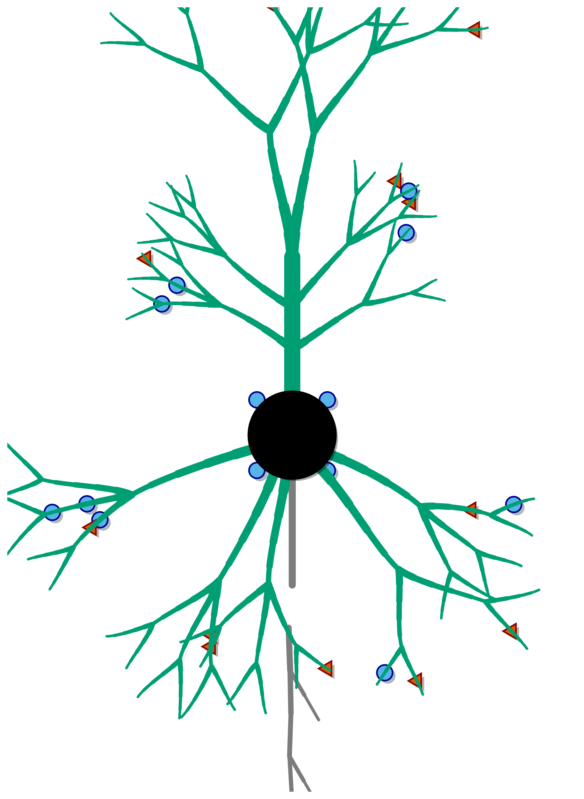
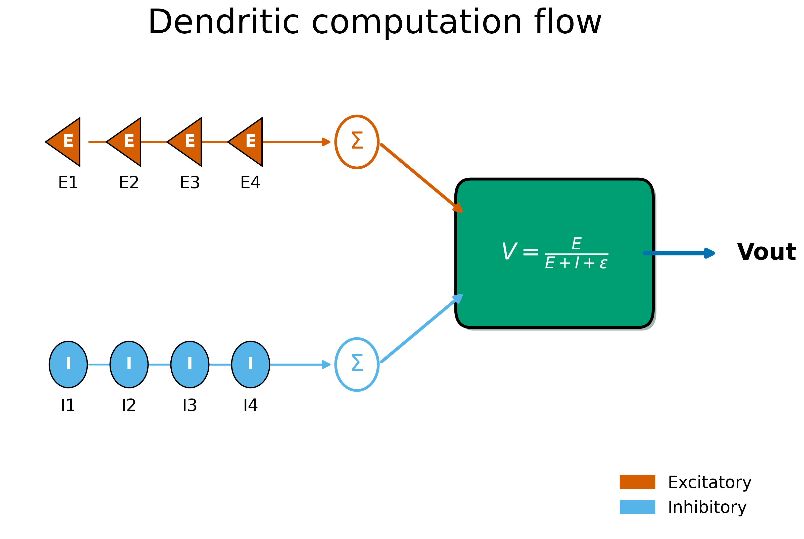
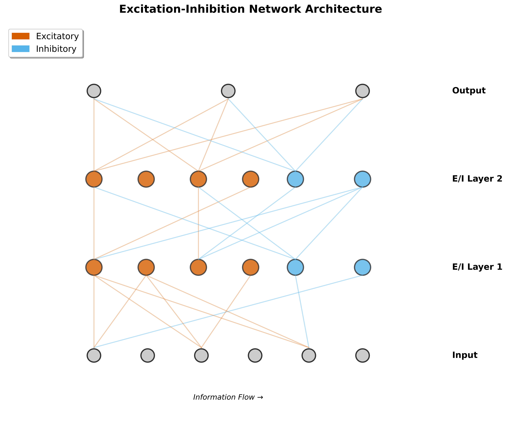

Theory and Background#
This section covers the theoretical foundations and biological principles underlying the Dendritic Modeling Framework.
Biological Foundations#
Dendritic Computation#
Neurons are not simple point processors. Their dendritic trees perform sophisticated local computations before signals reach the soma:


Key principles:
Spatial segregation: Different dendritic branches can process different input streams independently
Local nonlinearities: Dendritic branches implement nonlinear operations through voltage-gated channels
Compartmentalization: Electrical and biochemical isolation allows for localized processing
Shunting Inhibition#
The core computational principle in our framework is shunting inhibition, a divisive form of inhibition ubiquitous in biological neural circuits:


Where: - \(E\) is the excitatory input - \(I\) is the inhibitory input - \(\epsilon\) is a small constant preventing division by zero
This provides several computational advantages: - Gain control: Automatic adjustment of neural sensitivity - Normalization: Inputs are normalized by total activity - Stability: Prevents runaway excitation
Excitation-Inhibition Balance#
Following Dale’s principle, neurons in biological networks are either excitatory or inhibitory, but not both:


Network organization: - Separate excitatory (E) and inhibitory (I) populations - E→E connections propagate signals between layers - E→I connections recruit inhibition - I→E connections provide feedback inhibition within layers - I→I connections between layers
Mathematical Framework#
Dendritic Integration#
Each dendritic branch \(d_i\) performs the following computation:
This creates a sequential processing chain from distal to proximal dendrites:
Network Dynamics#
The full network dynamics for layer \(\ell\) are described by:
Where \(f_{dendrite}\) implements the sequential dendritic computation with shunting inhibition.
Sparse Connectivity#
Biological networks are sparsely connected. We implement several strategies:

Dense Connectivity: Traditional fully-connected layers
TopK Sparse: Each neuron connects to exactly K others
DEEPST Dynamic: Adaptive rewiring based on importance
Implementation Details#
Computational Efficiency#
Despite biological complexity, our implementation is computationally efficient:
Sparse matrix operations for connectivity
Vectorized dendritic computations
GPU-accelerated forward/backward passes
Memory-efficient gradient computation
Stability Considerations#
To ensure stable training:
Voltage stabilization: Pre-training phase to establish proper voltage ranges
Gradient scaling: Adaptive normalization for dendritic gradients
Weight initialization: Specialized initialization for E/I balance
Homeostatic regularization: Maintains healthy activity levels
Key Advantages#
The dendritic modeling framework offers several advantages over traditional neural networks:
- Biological Plausibility
Respects Dale’s principle (separate E/I populations)
Implements realistic synaptic dynamics
Models dendritic computation
- Computational Benefits
Natural normalization through shunting inhibition
Enhanced gradient flow through dendrites
Sparse connectivity for efficiency
- Robustness
Inherent stability from divisive normalization
Superior noise tolerance
Reduced need for explicit regularization
References#
Key papers underlying this framework:
Shunting inhibition: Carandini & Heeger (2012) “Normalization as a canonical neural computation”
Dendritic computation: Stuart & Spruston (2015) “Dendritic integration: 60 years of progress”
E/I balance: Denève & Machens (2016) “Efficient codes and balanced networks”
Sparse connectivity: Litwin-Kumar & Doiron (2014) “Formation and maintenance of neuronal assemblies”
For implementation details, see the API Reference.